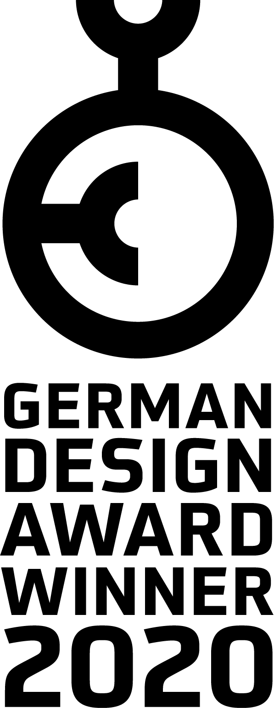
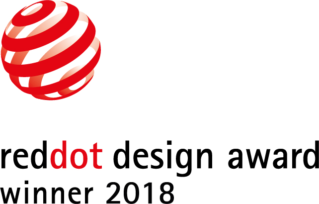
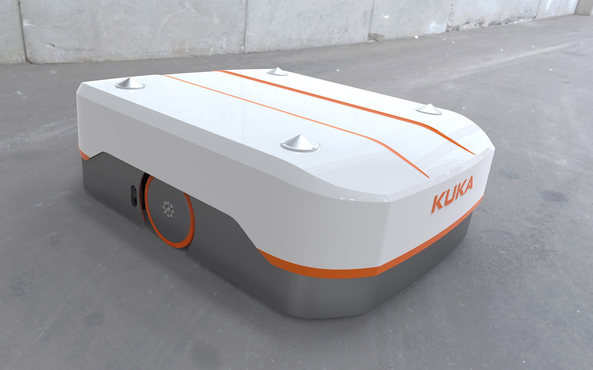
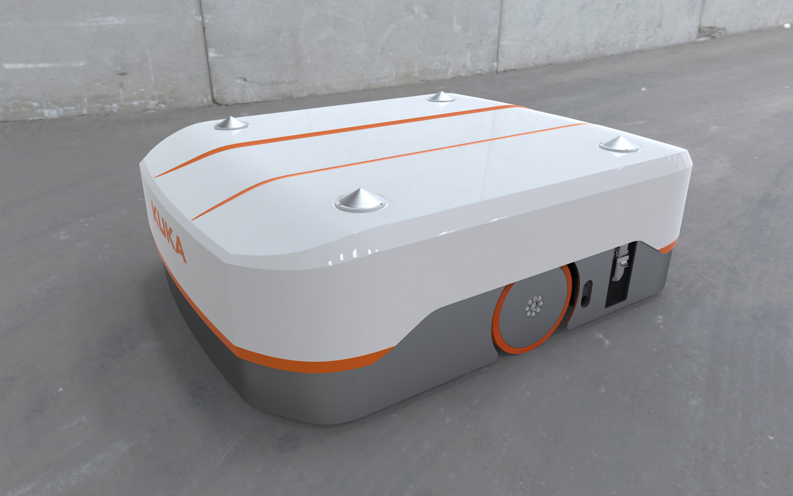
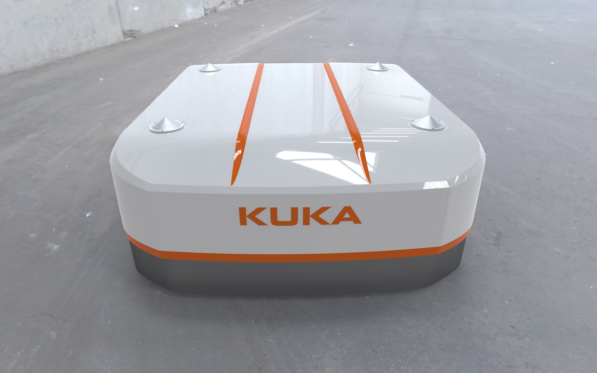
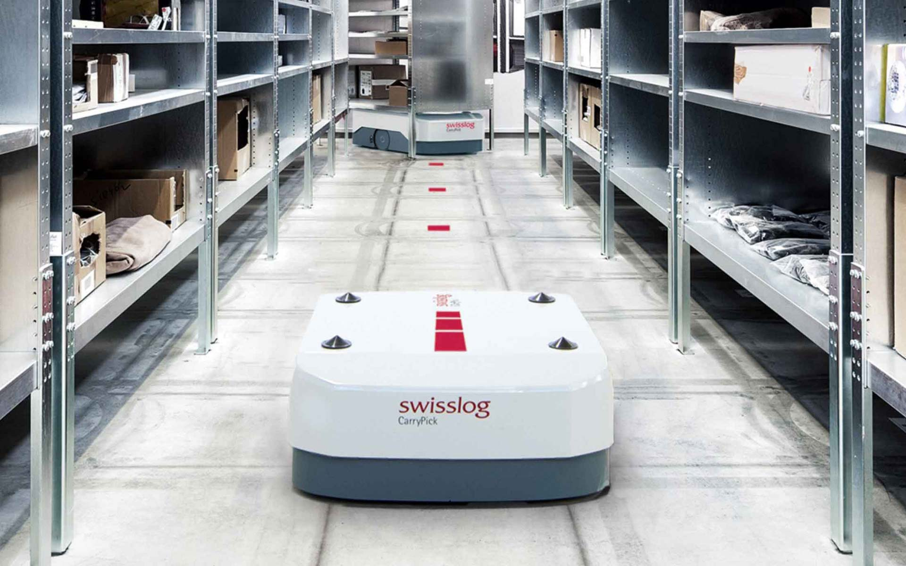

KUKA KMP 600
Mobile Platform
KUKA KMP 600
Mobile Plattform
The autonomously controlled vehicle KUKA KMP 600 is a platform that provides flexible material handling and optimizes logistics management.
In this case, this lane-bound vehicle with its exact lifting mechanism moves contactless and automatically
controlled under a load-carrying trolley, e.g. a Euro pallet with mobile substructure. This unit is then
transported by the KMP 600 by means of a coordinating control from point A to point B. Infrared sensors
and other safety systems ensure safe operation so that people are recognized in good time.
The design of the KMP 600 associates agility and has been specially tuned to cost-effectiveness and
service-friendliness. For the solid base with all its functional assemblies, a solid sheet metal welded
construction was chosen, while the lightweight, yet solid plastic cover is placed on the body in a few
easy steps. The load capacity is 600 kg, its total length 970mm.
Selić Industriedesign service: Design concept, design consultation, design sketches, CAD design support,
CAD freeform modeling, design refinement, processing of design data for the engineering department
Das autonom gesteuerte Fahrzeug KUKA KMP 600 ist eine Plattform, die dem flexiblen Materialtransport dient und das Logistik-Management optimiert
Dabei fährt dieses flurgebundene Fahrzeug mit seinem exakten Hebemechanismus berührungslos und automatisch
gesteuert unter einen Lastaufnahmewagen, z.B. eine Europalette mit fahrbarem Unterbau. Diese
Förderguteinheit wird dann von der KMP 600 mittels einer Leitsteuerung von Punkt A nach Punkt B
transportiert. Infrarotsensoren und weitere Sicherheitssysteme sorgen für einen sicheren Betrieb, so dass
auch Personen rechtzeitig erkannt werden.
Das Design der KMP 600 assoziiert Bewegung und wurde speziell auf Wirtschaftlichkeit und
Servicefreundlichkeit abgestimmt. Für die solide Boden-Chassis mit all ihren Funktionsbaugruppen wurde
eine solide Blech-Schweißkonstruktion gewählt, während der leichte, aber dennoch stabile
Kunststoff-Gehäusedeckel mit wenigen Handgriffen auf den Korpus gesetzt wird. Die Traglast beträgt 600
Kg, die Gesamtlänge 970mm.
Selić Industriedesign Dienstleistung: Designkonzept, Designberatung, Designentwürfe, CAD-Design
Unterstützung, CAD-Freiform-Modellierung und Detailgestaltung, Aufbereitung von Designdaten für die
Konstruktion




Renderings © Selić Industriedesign
Images © KUKA Roboter GmbH